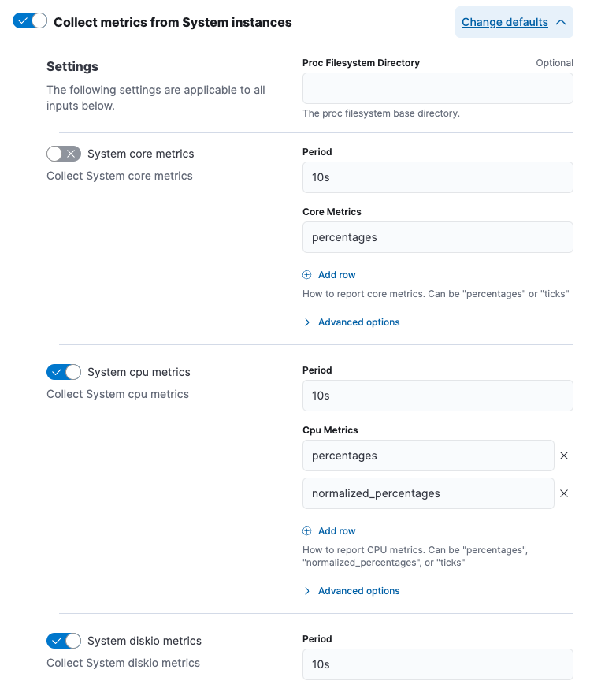

Understanding "no results found" message
editTo correctly render visualizations in the Observability UI, all metrics used by the UI must be present in the collected data. For a description of these metrics, refer to Metrics reference.
There are several reasons why metrics might be missing from the collected data:
The visualization requires a metric that’s not relevant to your monitored hosts
For example, if you’re only observing Windows hosts, the load metric is not collected because load is not a Windows concept. In this situation, you can ignore the "no results found" message.
You may not be collecting all the required metrics
This could be for any of these reasons:
-
The integration that collects the missing metrics is not installed. For example, to collect metrics from your host system, you can use the System integration. To fix the problem, install the integration and configure it to send the missing metrics.
Follow one of our quickstarts under Observability → Add data → Collect and analyze logs to make sure the correct integrations are installed and all required metrics are collected.
-
You are not using the Elastic Distribution of the OpenTelemetry Collector, which automatically maps data to the Elastic Common Schema (ECS) fields expected by the visualization.
Follow our OpenTelemetry quickstart under Observability → Add data → Monitor infrastructure to make sure OpenTelemetry data is correctly mapped to ECS-compliant fields.
-
You have explicitly chosen not to send these metrics. You may choose to limit the metrics sent to Elastic to save on space and improve cluster performance. For example, the System integration has options to choose which metrics you want to send. You can edit the integration policy to begin collecting the missing metrics. For example:
